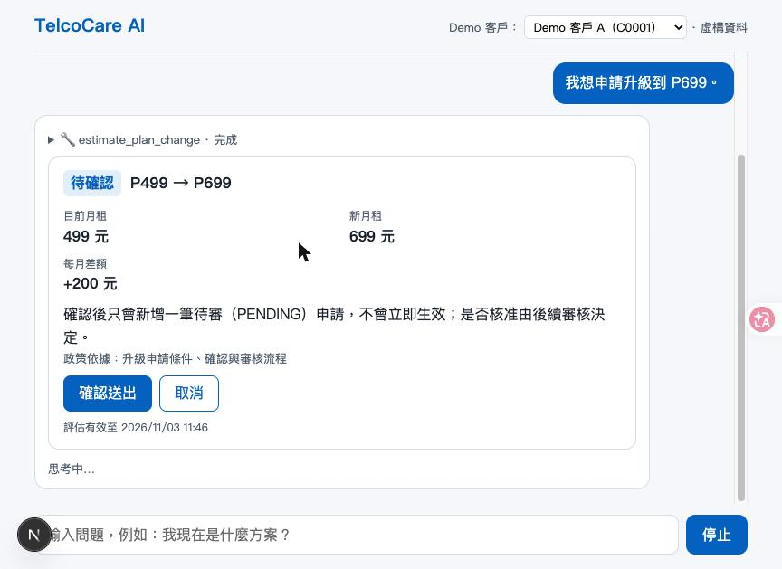
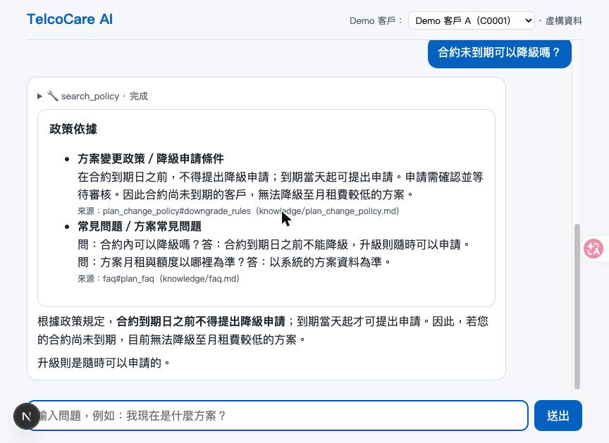
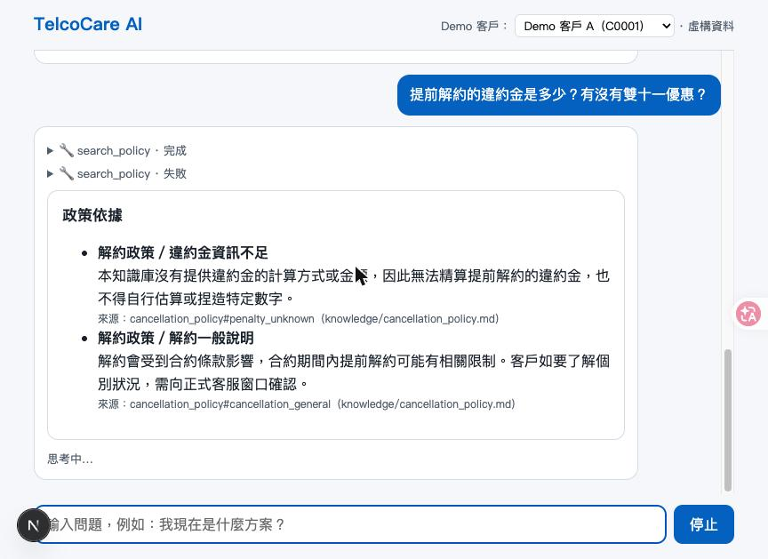
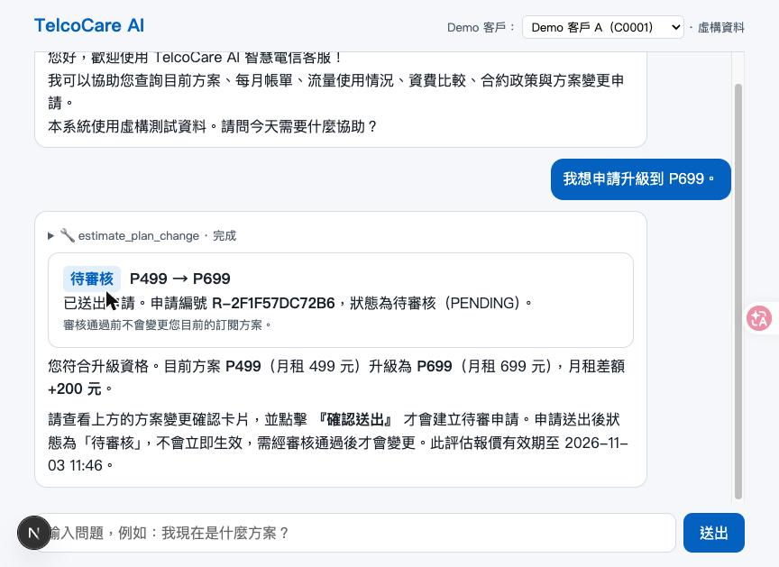

| Student ID | F115118105 |
|---|---|
| Name | 詹前淳 |
| Project title | Intelligent Telecom Customer Service Assistant（TelcoCare AI） |
| Techniques you used | Tool Calling、RAG（另有 Generative UI 卡片） |
| Model you used | 對話模型 Furen-max；RAG 嵌入模型 Embedding（皆為課程 NKUST AI Hub 服務） |
| How you built the chat screen | Next.js 16 + React 19 + assistant-ui（Vercel AI SDK），後端 FastAPI + SQLite |
| GitHub link (public repository) | https://github.com/chun040819/Midterm-Project_Intelligent-Telecom-Customer-Service-Assistant |
| Demo video (optional) | 未提供 |
| What is your topic? | 虛構電信公司的繁體中文智慧客服，可查本人訂閱、帳單、流量、比較資費、依政策回答，並建立方案變更申請。 |
|---|---|
| Where and when is it used? | 客戶在網頁客服視窗詢問方案與合約問題，或要升級／降級方案時使用（單機教學 Demo）。 |
| Who are the users? | 電信客戶（Demo 有三位虛構客戶 C0001–C0003），以及檢視申請結果的評閱者。 |
| What do they need? | 目前方案、每月帳單、流量是否超額、方案價格比較、合約／降級政策，以及確認後送出方案變更申請。 |
| Why can a general AI chat not do this? | 一般 AI 不知道這間公司的客戶資料、資費與政策，也無法把申請寫進資料庫；本系統由工具讀 DB、由 RAG 引用政策來源、確認後才寫入。 |
| ☑ Reads data from a database | get_my_subscription、get_my_bill、get_my_usage、list_plans 從 SQLite 讀取；客戶身分由伺服器 Session 決定，工具沒有 customer_id 參數。 |
|---|---|
| ☑ Writes data into a database | 使用者在確認卡片按「確認送出」後，confirm_plan_change 才在 plan_change_requests 新增一筆 PENDING；重複確認回同一筆。 |
| ☑ An agent that calls tools | 模型自行選擇 get_my_*、list_plans、estimate_plan_change、search_policy、申請狀態查詢等工具，Next.js 驗證後轉呼叫 FastAPI。 |
| ☑ RAG | 六份政策文件切成 19 個片段，以雲端 Embedding 建索引；search_policy 回傳片段與來源（檔名#段落），資訊不足時回報不足。 |
| ☑ Handles user requests | 可評估升級／降級、取消評估、確認建立申請、查詢申請狀態；不支援項目與越權要求固定拒絕。 |
| ☑ Something else | Generative UI：帳單、流量、方案比較與圖表、方案變更確認、申請狀態、政策來源卡片；卡片數值由 Session 內 data_ref 解析，非模型自填。 |
What the user wanted, and why the answer is correct: C0001 說「我想申請升級到 P699」。模型呼叫 estimate_plan_change；卡片顯示 P499→P699、月租 499→699、差額 +200（與 plans 表一致）、報價有效期限，且說明只會新增待審申請。此時尚未寫入 DB。

What the user wanted, and why the answer is correct: 使用者問「合約未到期可以降級嗎？」。模型呼叫 search_policy，回答「合約到期日前不得提出降級申請」，並附來源 plan_change_policy#downgrade_rules，與 knowledge/plan_change_policy.md 規則相同。

What the user asked, and how the app answered honestly: 使用者問「提前解約的違約金是多少？有沒有雙十一優惠？」。知識庫沒有違約金金額與優惠資料，回覆標示「違約金資訊不足」並說明不得自行估算，未編造數字或優惠，僅引用 cancellation_policy 的一般說明。此畫面同輪第二次 search_policy 顯示「失敗」，最終回覆仍只引用知識庫內容。

在另一輪展示中，使用者按「確認送出」後建立 PENDING 申請，訂閱仍為 P499：

以下為驗收腳本（scripts/acceptance_db_evidence.py）直接查詢 SQLite 的輸出（獨立一輪，申請編號與上圖不同）。確認前 C0001 無申請、全表 4 筆；確認後新增 1 筆 PENDING、全表 5 筆、訂閱仍為 P499；重複確認不新增（already_existed=True）；Reset 後回到 4 筆。
== 起始（Reset 後） {'C0001 requests': [], 'all requests': 4, 'C0001 subscription plan': 'P499'}
== T06 estimate eligible/delta True 200
== T07/確認前（estimate 不寫入） {'C0001 requests': [], 'all requests': 4, 'C0001 subscription plan': 'P499'}
== T08 第一次確認 201 {'request_id': 'R-7459DCA190A7', 'quote_id': 'Q-ACCEPT-1', 'old_plan_id': 'P499', 'new_plan_id': 'P699', 'status': 'PENDING', 'created_at': '2026-11-03T11:34:18+08:00', 'already_existed': False} {'C0001 requests': [('R-7459DCA190A7', 'Q-ACCEPT-1', 'PENDING')], 'all requests': 5, 'C0001 subscription plan': 'P499'}
== T09 重複確認 200 {'request_id': 'R-7459DCA190A7', 'quote_id': 'Q-ACCEPT-1', 'old_plan_id': 'P499', 'new_plan_id': 'P699', 'status': 'PENDING', 'created_at': '2026-11-03T11:34:18+08:00', 'already_existed': True} {'C0001 requests': [('R-7459DCA190A7', 'Q-ACCEPT-1', 'PENDING')], 'all requests': 5, 'C0001 subscription plan': 'P499'}
== E09 Reset 後 {'C0001 requests': [], 'all requests': 4, 'C0001 subscription plan': 'P499'}
| Which AI tools you used | Claude Code |
|---|---|
| Where you used them | ☑ In a console (a command-line tool) ☐ Inside VS Code ☐ In a web chat page ☐ Other tools |
| About how many hours | 約 3 小時 |
| What you used them for | 規格與工單拆分、寫程式與測試、驗收（含瀏覽器與真模型）、修 Bug、整理文件。 |
One problem and how I solved it: 工單 06 的第一版 RAG 用本機嵌入模型。真模型驗收時 search_policy 回傳 INTERNAL_ERROR，最終回答「無法確認」，查到 transformers 缺少 dependency_versions_table，真嵌入測試因此被跳過。我改用課程提供的雲端 Embedding 服務，補上索引與校準設定綁定的檢查，重測後 10 項真嵌入測試通過，並重新驗收 Conversation 2。AI 在寫程式、測試與找出失敗點上幫助最大；它也曾把「確定性測試通過」寫成像真模型驗證，我要求改成明確分級並標示哪些沒有實測（例如 T07、T15 的真模型提示注入、60 秒逾時）。
☐ PDF 命名為 F115118105_詹前淳_Midterm.pdf，並上傳課程網站（上傳由本人操作）
☑ 使用 Tool Calling 與 RAG
☐ GitHub 公開，連結在 Basic Information，且無痕視窗可開啟（推送後確認）
☑ Repo 含程式碼、資料檔、.env.example、依賴鎖定檔、README.md、.gitignore，不含 .env；API Key 不在檔案與前端程式碼中
☑ 資料皆為虛構